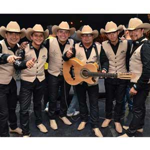

Entendemos que ustedes, los lectores de la Revista Mi Gente TV, quieren estar pendientes todo el tiempo de sus artistas favoritos y conocerlos más a fondo, es por esta razón, que en el Directorio de Artistas podrán encontrar cada una de sus redes sociales y estar más cerca de ellos. Además, si quieren tenerlos en sus cumpleaños o en algún evento especial, los podrán contactar solo aquí en la Revista Mi Gente TV.
Los Hermanos Medina
|
Los Hermanos Medina es la agrupación tropical número uno del momento en Colombia, conformada en Popayán Cauca por un padre y sus hijos. Hoy llegan a la capital del país con su nuevo éxito “Quédate con él”.
Contacto:
Teléfono: 312 8317193
Teléfono: 310 3555795
Teléfono: 311 7883956
losmedinaorquesta@hotmail.com
www.loshermanosmedina.com |
Ferando Gil
 |
Fernando Gil se la jugó en grande con el famoso compositor y productor colombiano, Kike Santander quien le apostó a la música popular, para que algunas de sus canciones fueran interpretadas por este artista quien lleva años cantándole al amor y al despecho.-Mi amante– hace parte del álbum “La Historia”.
Contacto:
Teléfono: 313 7234793
Twitter: @fndogil
Mail: fergil1213@hotmail.com
www.home.fernandogil.co |
Los Caballeros de la Cantina
|
Es la agrupación más importante en este momento de la música popular en Colombia, ocupando los primeros lugares de los tops nacionales con su tema “Y a beber”.
Contacto:
Teléfono: 321 6617277
Facebook: LosCaballeros.delacantina
Twitter: @loscaballeross
www.loscaballerosdelacantina.com |
MYP Milton y Paola
|
Milton y Paola, son la nueva imagen de la música tropical latina, un dúo de cantantes que llegaron con una propuesta de una fusión de ritmos musicales para refrescar el género.
En el 2015 se dieron a conocer a nivel nacional con su pegajoso éxito “Ámame”; para este 2016 llegan cargados con el romanticismo de su bachata “Lo que tú y yo vivimos”, canción de su autoría, que promete no sólo ser un hit en los ranking del país si no cautivar los corazones de sus seguidores.
Contacto:
Facebook: mypoficial
Twitter: mypoficial
Instagram: @mypoficial
www.mypoficial.com |
Yiyo Bohórquez
 |
Oriundo de Santa Sofía – Boyacá. Cantante, compositor e intérprete del acordeón; desde muy niño su inclinación por el vallenato ha llegado a miles de seguidores con canciones como “Entrégame tu amor”, ahora presenta su nuevo éxito “Insistir en tu amor”.
Contacto:
Teléfono: 310 7870453
Mail: elvallenatosuvoz@hotmail.com
|
Arelys Henao
|
"La reina de la música popular", una artista de talla internacional, que cuenta con una gran trayectoria musical, agradece al público colombiano por el apoyo que le han brindado y ahora nos presen-ta su más reciente sencillo “No me conviene”.
Contacto:
Teléfono: 312 840 2586
Facebook: arelyshenao1
Instagram: @ARELYSHENAO
Email: arelyshenao@hotmail.com |
William Benavides
|
Artista del género popular oriundo de Puerto Asís, ha tenido la oportunidad de presentarse en varios conciertos y compartir escenarios con grandes artistas en el sur de Colombia. Ahora nos presenta sus nuevos éxitos “Amargo desprecio” y “Lejos de ti”.
Contacto:
Teléfono: 312 879 7176
Teléfono: 311 711 1026
Email: gregoribuiles@hotmail.com |
Jhon Eder Muñoz Quintero
 |
“El rey de las cantinas”,cantante de música popular.
Contacto:
Teléfono: 3152025814
Teléfono: 3148796030
Facebook: Jhon Eder Muñoz Quintero
Instagram: Jhon Eder Munoz Quintero |
Grupo Indomables
|  |
Es una agrupación colombiana de música norteña y regional mexicana, con una trayectoria de más de 15 años.
Innovadores en su forma de interpretar este género musical, con un estilo propio y con gran proyección. Nos presentan su álbum en vivo con temas de excelente aceptación por parte de los seguidores de la música norteña.
Contacto:
Teléfono: 320 4521967
Teléfono: 315 7909850
Teléfono: 312 4670234
Facebook: Amigos de indomables
Indomables página oficial
grupo_indomables@hotmail.com |
Yeison Jiménez
|
Cantautor de la música popular; este gran artista que ha logrado conquistar los corazones de todo Colombia con su talento, profesionalismo y sencillez, agradece a Dios por todas las bendiciones que ha recibido hasta el momento en su carrera artística, ahora nos presenta su nuevo sencillo “Ya no mi amor”.
Contacto:
Instagram: @Yeison_jimenez
Twitter: @Yeison_jimenez
Youtube: YEISON JIMÉNEZ
Facebook: YEISON JIMENEZ
|
Alberto Salsa
|
Alberto Díaz Ochoa, más conocido como Alberto Salsa, dada su amplia trayectoria musical interpretando salsa en diferentes lugares del territorio nacional.
Alberto Salsa nos presenta su primer sencillo titulado “No soy de palo”, una salsa romántica con autentico sabor caribe.“No soy de palo” ratifica que el amor es la cualidad intrínseca del hombre, pero que el dolor y la tristeza causados por la ausencia del mismo, muchas veces, nos hace más humanos.
Contacto:
Representante: Manuel Blanquiceth
Teléfono: 322 4399645 – 301 4882178
Whatsapp: 322 4399645 – 301 4882178
Youtube: Alberto Salsa no soy de palo
Twitter: albertosalsasoy
Instagram: Alberto Salsa no soy de palo
albertosalsacantante@hotmail.com |
Orlando López
|
Contacto:
Teléfono: 322 6825726
Facebook: Orlando33777158
Instagram: orlandolopezdespecho
|
Maritza Gutiérrez
|
La voz dulce de la música popular, ha alternado con grandes artistas nacionales como Jorge Celedón, Darío Darío y Silvestre Dangond, entre otros, y está presentando su nueva producción “Y tú pensando en volver” de los mexicanos Arturo Leyva y Sergio Serrano. Cabe recordar que el tema pionero de Maritza Gutiérrez es “Me beberé tu amor”.
Contacto:
Teléfono: 3142 210388- 321 3727701
Facebook: Maritza Soraya Gutiérrez
Youtube: Maritza Gutiérrez |
| |
|
Stokoff
|
Músico, compositor y físico de profesión con su pasión sensual y sugestiva se desprende su más reciente sencillo discográfico “Fuera de mi” direccionado a un sonido pop con bastante proyección internacional.
Contacto:
Teléfono: 300 3110812
Twitte: @Stokoff
Instagram: @Stokoff |
Jhon Alex Castaño
|
El reconocido cantante de música popular “El rey del Chupe” Jhon Alex Castaño se viste de estreno con su nuevo videoclip del tema “Amanecí contento”. Lo hace de la mano de una canción que hará historia en su género. El rodaje del video se realizó en el eje cafetero, con un gran despliegue técnico y bajo el formato cine. Jhon Alex Castaño agradece infinitamente tanto amor y apoyo que le dan a su música.
Contacto:
Teléfono: 312 5064091 – 315 7648821
Oficina: (6) 3315161
Facebook: Jhon Alex Castaño
Twitter: @jhonalexcastano
Instagram: jhonalexcastano
www.jhonalexcastano.com
jhonalexcastano1@gmail.com |
Yao
|
El cantautor colombiano Yao estrena su sencillo “La más pega”, uno de los temas de su nueva producción discográfica denominada “#LaEsencia“.
El video de “La más pega” se realizó bajo la producción de Replay producción de Jankee Martínez. Además contó con la colaboración de laTotti en San Andrés junto a un gran equipo de especialistas en el tema, quienes no escatimaron detalles, para que Yao mostrará la esencia fresca y espontánea que lo caracteriza a la hora de interpretar y mostrar imágenes de Cartagena que representa la esencia de ritmos caribeños.
Yao es recordado por temas como: “El celular”, “Ponte eléctrico”, “Rabo de paja”,“La dulzura”, entre otras.
Contacto:
Teléfono: 3145755067
Facebook: EL YAO
Instagram: YAOSUBLIME
Youtube: YAOLAMELODIASUBLIME
|
Loren, la voz angelical
|
Loren, “La voz angelical” quien solo con nueve años de edad es una artista integral, nos sorprende con su talento y versatilidad para interpretar sus canciones en el escenario, acompañada de su grupo norteño. Loren para el 2016 nos presenta su más reciente sencillo “La autora de mi vida” composición del maestro Argemiro Jaramillo.
Contacto:
Teléfono: 3102290466
lorenlavozangelical@hotmail.com
Facebook: Loren Jineth Lopez
Loren la voz angelical
Twitter: @lorenlo123
Instagram: LORENJUNETH.LOPEZ |
Luis Miguel Fuentes
|
Artista vallenato, con gran acogida en el público, reconocido musicalmente por su romanticismo y su voz. Con una trayectoria musical de más de 20 años. Ahora nos presenta su más reciente sencillo “Te voy a olvidar”.
Contacto:
Teléfono:3217644139
Facebook: luismiguelfuentes
Instagram: @luismiguelfuentes
Twitter: @luiselromantico
|
Air Boy
|
Víctima del conflicto armado, bendecido con la música, Air Boypresenta “Llegó el momento” en una versión EP (5 canciones), esta producción es un adelanto de lo que será el disco completo con 13 tracks. Incluye canciones como “Bailalo”, “Dónde estás”y “Llegó el momento”demostrando así todo su poderío lirical, siendo compositor de sus canciones.
Contacto:
Facebook: SOYAIRBOY
Instagram: SOYAIRBOY
Twitter: SOYAIRBOY
Youtube SOYAIRBOY
BOOKING:
Teléfono: (+57) 304 4405009
CONTACTO@SOYAIRBOY.COM
WWW.SOYAIRBOY.COM |
Karval
|
El creador de la Cumbia Style en Colombia, llega con un nuevo lanzamiento este trimestre de 2016,
“Embolatao”, tema que le da continuidad a este pegajoso ritmo, que no solo le gusta a los adultos, sino que es adoptado también por gran cantidad de niños que viendo sus videos musicales, quieren contagiarse de la Cumbia Style de Karval.
Contacto:
Twitter: @karvalCD
Facebook: karvalCD
www.karvalcd.com
|
Astra
|
Astra, inicia el 2016 con el lanzamiento de –No sé tú-, una canción que muestra la esencia musical de la artista colombiana. Astra quien tuvo un 2015 de grandes retos y la excelente aceptación de sus temas –Algo pendiente– y de su último sencillo –Y no vayas a pensar-, regresa con esta nueva canción de la que espera la misma recepción del público.
Contacto:
Twitter: @yosoyastra
Instagram: @yosoyastra
Facebook: yo soy astra
Youtube: YoSoyAstraOficial
Manager : SARA MONROY
cortesentertainment@hotmail.com |
Danny Moreno
|
Talentoso artista vallecaucano, nacido en La Unión y radicado en Cali; desde muy niño su madre apoyó su naciente talento heredado de su padre y desde entonces fue enfocado en técnica vocal y expresión artística. Hoy, con tan solo 19 años, ha participado en diferentes escenarios y conciertos, compartiendo tarima con artistas de talla nacional e
internacional como Jorge Celedón, J. Balvin, Arcángel, Ray Sepúlveda, David Pabón, Maelo Ruíz, entre otros.
Contacto:
Facebook: DannyMorenoLF
Instagram: Dannymorenolafluidez
Twitter: DannyMoreno08
www.mypoficial.com
|
Magnate
 |
Magnate, un artista con grandes experiencias vividas, ha logrado consolidarse como uno de los pilares en la evolución de la música urbana, ganando durante este proceso, toda la madurez personal y profesional necesaria, para presentar al mundo este nuevo paso artístico, que es su carrera musical como solista.
Contacto:
Teléfono: 304 6347209
Twitter: magnate_oficial
Instagram: @Magnatepr
Youtube: /magnatevideos |
Gerardo Amado
|
Ex integrante de la agrupación Los Renegados Otros, pionero de las sagas “Corridos prohibidos”, “Cantina abierta”, entre otras. Sus primeros temas con la agrupación Fuego Verde fueron: “Mátame a besos” grabado en Bogotá y mezclado en México y “Sin licor también se olvida”. Ahora como solista nos presenta una nueva propuesta musical, un trabajo bien pensado; con esta producción logra el reconocimiento y la aceptación del público con temas como “Corazón corazoncito” cuyo video logra traspasar
fronteras.
Contacto:
Teléfono: 3102102935
Facebook: Gerardoa.amado
|
Dr. Velásquez
 |
Cantautor, productor y empresario; en el 2.015 decide consolidar una carrera como solista, lanzando al mercado la obra musical “Dime” que logró una muy buena receptividad de su público. Regresa para el 2.016 con “Tu volverás”, su nueva canción con sonidos tropical pop, compuesta por Dr. Velásquez, una lírica bastante romántica que evoca la ausencia de la mujer amada con la esperanza de su pronto regreso.
Contacto:
Teléfono: 315 7758179
Facebook: DrVelasquezdh
Twitter: Drvelasquez_
Instagram: Drvelasquez_
YouTube: DrVelasquezDhr
|


{kind=link}
{kind=link}
{kind=link}
{kind=link}
{kind=link}
{kind=link}
{kind=link}
{kind=link}
{kind=link}
{kind=link}
{kind=link}
{kind=link}
{kind=link}
{kind=link}
{kind=link}
{kind=link}
{kind=link}
{kind=link}
{kind=link}
{kind=link}